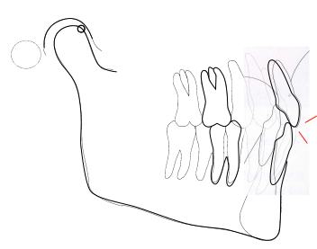
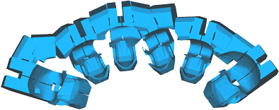
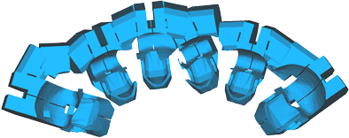

Efficiency matters.
The vast majority of doctors on planet earth place NON-customized braces 'BY HAND'. There are MANY problems with this approach - very little accuracy or precision. You see, guesswork makes mess work. If braces are not placed with very high accuracy and precision, it means treatment will take twice as long. Why? The doctor will have to do a LOT of manual 'adjusting' to finish the treatment. This means a lot of GUESSWORK. It means many more added appointments, much more uncertainty, much added discomfort, and poorer quality outcomes.
The second key to fast treatment is using the combination of a shape memory wire with a metal slot or tube. If you know anything about braces you'll recognize this as the regular old way of doing braces. Yes, it's ugly and uncomfortable, but it doesn't HAVE TO BE, and it is still by far the most common appliance used in the whole world. Know why? Because it works so well !
So, the designers of the OrthoCure system have taken this tried and true concept, improved it tremendously using modern digital technology, and used it to create a system that offers all the mechanical benefits while also keeping it completely hidden and amazingly comfortable. Why does it work so well? Read this article for more detail on why 'shape memory wires' are better than clear aligner plastics.
Clear aligners are one of the slowest means of achieving any treatment objective.
Now then, there are the clear aligners which try to use plastic to move teeth with very poor leverage and very poor elasticity. It's hardly worth comparing but if you want to understand the technical short comings of using plastic clear aligners in detail, then read this article. Clear aligners are one of the slowest means of achieving any treatment objective.
In addition to lacking the basic mechanical abilities, clear aligners also have the very distinct disadvantage that they require plastic to always be covering the biting surfaces. Now...understand this fact. Any doctor worth their salt knows how incredibly sensitive your teeth, jaw muschles and nervous system are to even the smallest discrepancy in your bite. Changes as small as the thickness of a single human hair can cause serious pain for some.
With clear aligners, you can't fix the bite.
So, as talented as your doctor is, she can't really position your teeth that accurately. It's your jaw muscles and biting that ultimately create the fine detailed positioning of the teeth. If your teeth are covered with plastic 24/7, then how are those natural forces able to exert their influence? They can't. And it's well known amongst orthodontists that you can't fix the bite with clear aligners. In fact, with clear aligners, you actually stand a better chance of messing-up the bite relationship!
Who cares about the bite relationship?
If you want straight teeth - you should.
Fact is, if the bite is not right (and it's not in MOST cases), you won't get to keep your beautiful smile for very long. Relapse is very, very common - but it doesn't have to be that way. The goal of any treatment should include a plan for STABILITY. And, that doesn't just mean telling someone to wear their retainer. It means fixing the bite and more.
For all you clear aligner fans out there, this is one of the MAIN reasons that so many orthodontists will not use clear aligners for all but the simplest of cases. Because you can't fix the bite when your biting on plastic 24/7 ! Clear aligners actually INHIBIT and PREVENT fixing the bite.
With clear aligners you're more likely to create bite problems than to fix them.
Now, it's no secret that if you want to really make someone miserable, do something to mess up their bite. Few things in life are so persistently annoying and painful and prevent you from enjoying the simplest of the pleasure like eating, drinking or sleeping. You just can't underestimate how important it is.
So how does the bite relationship cause relapse or instability?
Some people find good doctors who do great work. They fix the bite properly even though its really hard work. But then some of us are not so lucky, and our doctors' don't put the effort in...... and so its FREMITUS for the rest of us. I know it's a funny word...nonetheless important.

What the heck is fremitus?
What is fremitus? It's what happens when you bite all your teeth together into that one position where they all seem to fit, except that some teeth (one or more) make contact before all the rest and, as your jaw closes down further this tooth (or these teeth) is DISPLACED until your jaw is fully closed. Doesn't sound too good does it? It's not.
If there is anything good or positive about this, it would be that fremitus rarely hurts. But all this really means is that you DON'T KNOW about it. And, alas, that's why so many treatments are finished without correcting it. It's just so dang convenient to ignore it.
But, just because it doesn't hurt doesn't mean it's not a problem. What's going to happen in the long run?
First let's consider overall stability. You started treatment with a mouth full of teeth that were NOT mobile. Now you have teeth that ARE mobile. Is that a stable outcome? Of course not. But what's equally concerning is how these teeth are EVER going to become stable. Because this problem will get worse before it gets better. As time goes by the jaw will tend to close a bit more (fractions of a millimeter yet still significant) and make it worse. Moreover, because these teeth are getting 'pushed around', the only stabile position they'll ever find is when you stop wearing your retainer and allow them to MOVE out of alignment to a position where your bite wants to push them. Now they're stabile... but mal-aligned again....ugh. The bite always wins in the end. This is why it's so important. You can't fight the bite. Your doctor has to put teeth where they can live peacefully without getting pushed around. But it's not always easy.
So you know at least part of the story about why the bite is so important. And when we talk about the speed of treatment the conversation must begin with the level of quality that we aspire to. If we do not aspire to fix the bite properly and try to get by with leaving some degree of fremitus, then ALL treatments could be REALLy speedy. But if you aspire to keep your smile and your teeth for a long time, invest a little in making sure you get the highest quality outcome. Accuracy and precision solve many, many orthodontic problems by preventing them in the first place. Ask your doctor about OrthoCure.

 
